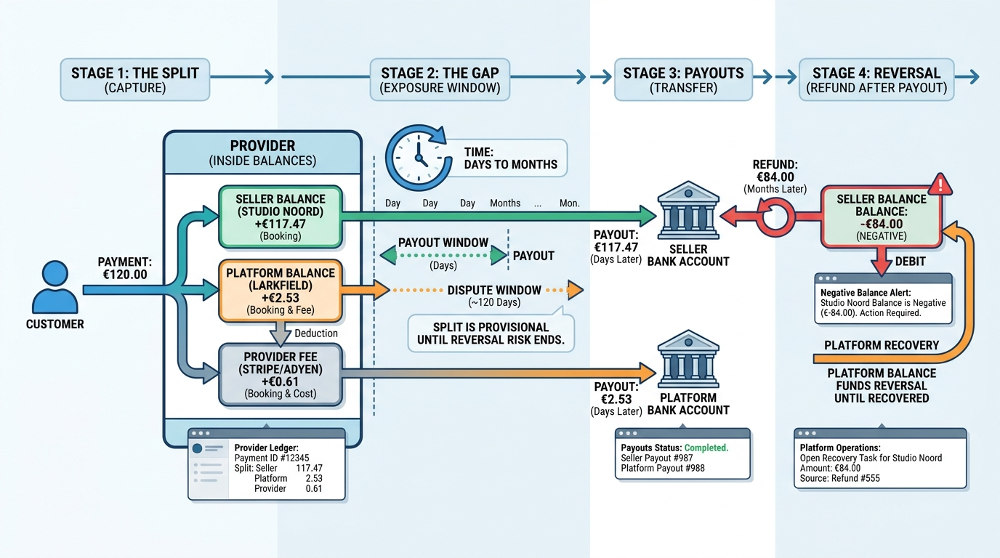

Part VII — PLATFORMS: Paying Many Parties
Dividing the Money: Splits, Platform Balances and Seller Payouts
AI-assisted: researched and written with Claude Code; illustrations generated with Gemini. How this works

Image generated by Google Gemini (gemini-3-pro-image-preview)